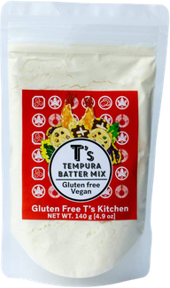
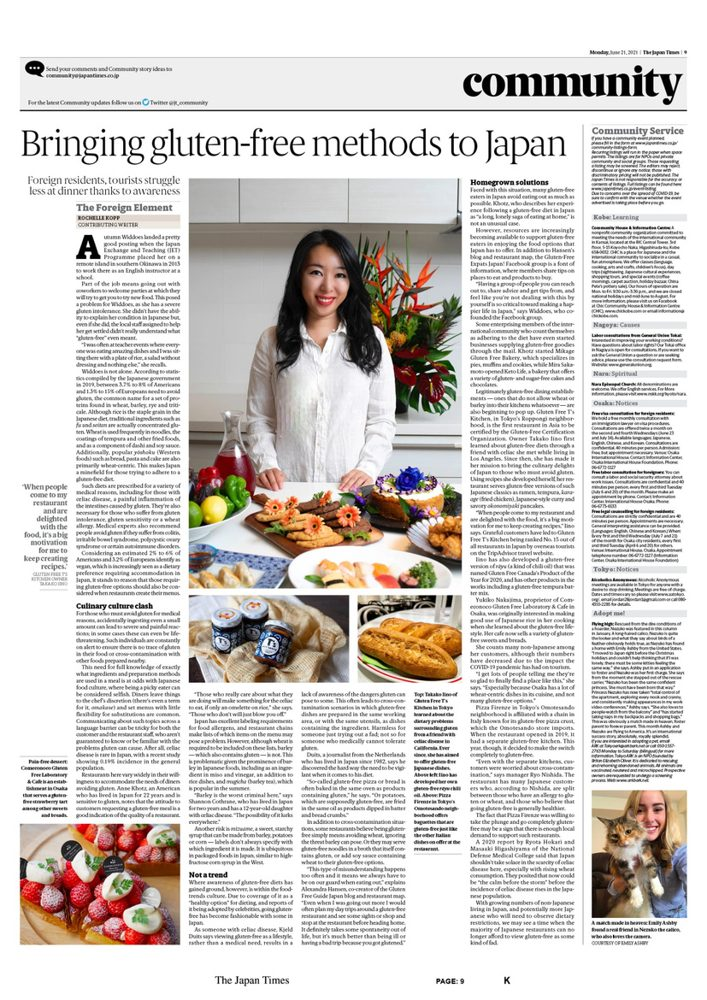

COMPANY
会社概要
株式会社飯野 ― Gluten Free T's Kitchen

会社情報
| 会社名 | 株式会社飯野（Iino Co., Ltd.） |
|---|---|
| 所在地 | 〒135-0034 東京都江東区永代2-35-8 |
| 設立 | 1976年11月1日 |
| 代表者 | 代表取締役 飯野孝子 |
| 資本金 | 1,000万円 |
| 事業内容 |
|
| 主要店舗 |
|
| 主要取引先 | アマゾンジャパン合同会社／日本酒類販売株式会社／国分グループ本社株式会社／井辻食産／新潟製粉 |
| グループ会社 | 株式会社たいのいかこ |
| お問い合わせ | TEL 03-6874-7719 E-mail 61@glutenfree.co.jp |
受賞歴
- GIG アジア初グルテンフリー認証レストラン
- 農林水産省主催 Food Action Nippon Award 2019 アマゾン賞
- カナダ グルテンフリーオブザイヤー2020 パントリー部門 グランプリ
PHILOSOPHY
企業理念
「制限ではなく、可能性を味わう新しい食文化」
私たちは、グルテンフリーを特別な制限食ではなく、多様な食の選択肢として提供し、健康と美味しさを両立させる食文化を広げます。
5万人年間来客数（2025年）
700+オリジナルレシピ・商品
No.1トリップアドバイザー東京エリア（2019年）
アジア初グルテンフリー認証レストラン
CONCEPT
食の制限から、可能性を味わうレストランです。
グルテンフリーを必要とする方々の笑顔を目指して、ソウルウォーミングフードを提供します。
- 国際認証による信頼と、独自のノウハウ・知識
- グルテンアレルギーや食事制限があっても楽しめる商品を開発
- 2015年から、グルテンアレルギー・その他のアレルギーを独自に研究
VISION
食の多様化を広げる。
ヴィーガン・ハラール・ベジタリアンなど、食の多様化を広げることが私たちのビジョンです。
- 日本独自の旨味を世界へ届けます
- 700を超えるオリジナルレシピ・商品を開発
事業内容
豊富なグルテンフリーやアレルギー対応の経験と知識を活かして、事業をしています。
レストラン
お弁当・ケータリング


海外輸出
沿革
- 六本木一丁目に「Gluten Free 61 Cafe and bar」オープン
- Uber Eats ジャパンで初のグルテンフリーカテゴリーを創設し、第一号店として参加
六本木7丁目に移転し「Gluten Free T's Kitchen」オープン
トリップアドバイザー 東京エリア95,148店舗中 第1位
Validated Gluten Free Safe Spot ― GIGアジア初のグルテンフリー認証レストランに選出
農林水産省主催 Food Action Nippon Award 2019 アマゾン賞
グルテンフリーオブザイヤー カナダ2020 パントリー部門 グランプリ受賞
Googleビジネス「2020 港区人気店」に選出
トリップアドバイザー 外国人人気レストラン 全国15位に選出
- ジャパンタイムズの1面に「日本の有名なグルテンフリーレストラン」として紹介される
- 東京メトロ ウェブサイトの2月のバナー表紙に掲載
- アパホテル上野広小路1階に2店舗目オープン
- 12月 主婦と生活社より初の書籍『グルテンフリーシェフが教える米粉のヘルシープレート』発売
- 4月 原宿に3店舗目オープン

MEDIA ・ 2021年6月
The Japan Times
世界的標準に合わせたアジア初のグルテンフリーレストランであり、日本に画期的なグルテンフリーを伝える人として、ジャパンタイムズの一面になり、海外からも評価をいただきました。
日本を含めアジアでは、グルテンフリーの知識や認識がまだ世界標準になっていないため、実際にはグルテンフリーと認められないものも多いのが現状です。
レストランでは、可能な限りグルテン以外のアレルギーにも対応しています。